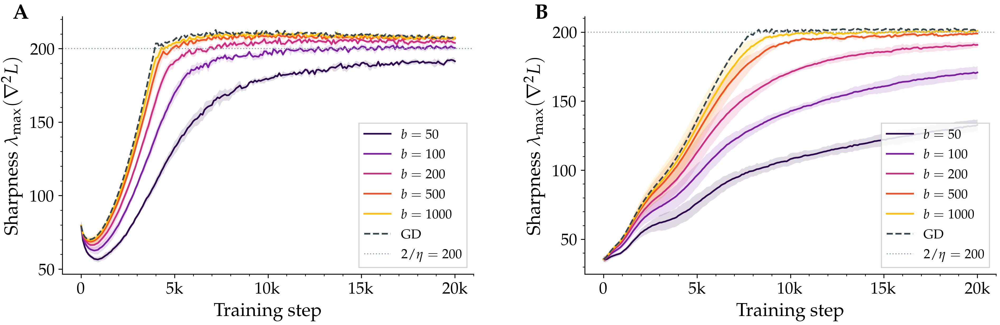
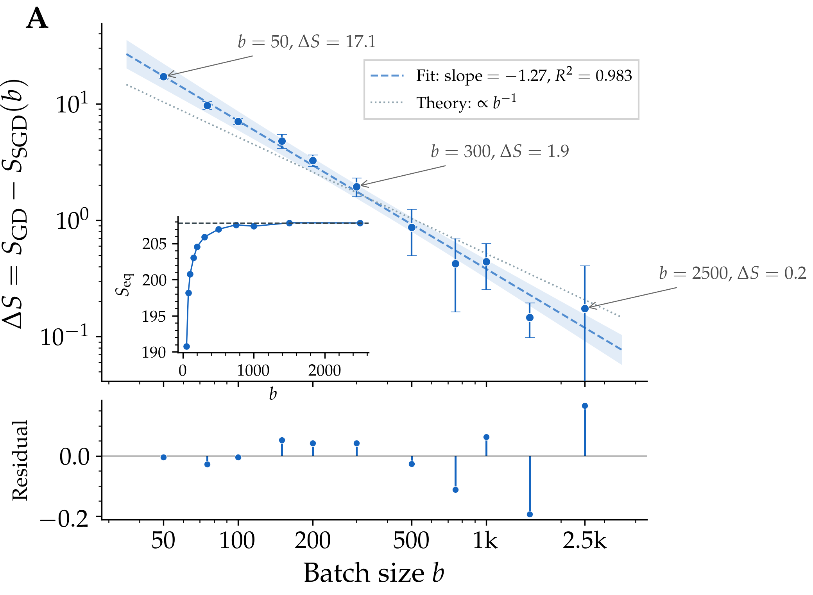
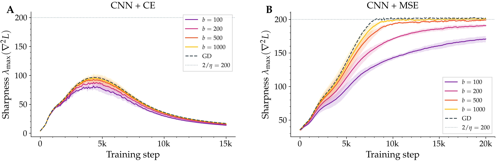

A closed-form explanation for one of deep learning's most reproducible — and least understood — empirical regularities.
When a neural network is trained with full-batch gradient descent, the steepest direction of its loss landscape gets pinned to a specific value set by the step size. With mini-batch SGD, that same quantity sits below the value, and the smaller the batch, the lower it sits. We show why: the gradient noise injected by mini-batches doesn't just perturb the trajectory — it amplifies a restoring force that was already keeping things stable, and the equilibrium quietly drops by an amount we can write in closed form.
Train a neural network with vanilla gradient descent and a step size η, and a curious thing happens. The largest eigenvalue of the loss Hessian — a quantity called the sharpness, which measures how steeply the loss curves along its most sensitive direction — climbs steadily during early training. Then it reaches a number, 2/η, and refuses to climb further. The loss continues to fall, but the sharpness oscillates in a tight band right at this value.
This is the Edge of Stability, named by Cohen and collaborators in 2021, and by now it is one of the most reliably reproducible phenomena in deep learning. The number 2/η is not arbitrary: classical optimisation theory says that gradient descent is only guaranteed to decrease a smooth loss when η < 2/S. Past that threshold, in principle, training should diverge. In practice, training proceeds — the network sits at the cliff edge and refuses to fall.
For a long time this looked like a paradox. In 2023, Damian, Nichani, and Lee resolved the paradox for full-batch gradient descent. Their argument is geometric: when the iterate starts to oscillate along the most unstable direction, the third derivative of the loss generates a cubic restoring force that pushes the sharpness back down. The system finds a self-correcting equilibrium right at 2/η. They proved it as a coupling theorem: the actual gradient-descent trajectory tracks a constrained reference trajectory plus a small oscillation, with controlled error.
That argument explained gradient descent. It did not explain what happens with mini-batch SGD.
If you replace full-batch gradient descent with stochastic gradient descent and a small batch size, the sharpness still rises and then plateaus — but it plateaus below 2/η. The smaller the batch, the lower the plateau. Reduce the batch from 1000 to 50 and the equilibrium sharpness drops by a measurable, reproducible amount. This isn't subtle, and it isn't new. Cohen's 2021 paper noted it in passing. Andreyev and Beneventano (2025) identified a related quantity — the so-called batch sharpness, measured along the direction the mini-batch gradient actually moves — that does sit at 2/η. They called this the Edge of Stochastic Stability, and explicitly posed as an open problem the question of why the full-batch sharpness is suppressed and by how much.
That open problem is what our paper closes.

Figure 1. Sharpness during training under SGD with different batch sizes. Each line is the largest eigenvalue of the loss Hessian, measured every 50 steps over a 20,000-step run on a small CIFAR-10 subset. Full-batch gradient descent (dashed) plateaus at the classical threshold; SGD plateaus below it, and the smaller the batch, the lower the plateau. Left: a fully-connected tanh network. Right: a small CNN with squared-error loss. The CNN's gap is several times larger than the MLP's — a clue about where the noise enters.
The mechanism we propose is a small extension of Damian's. Picture the iterate close to its constrained trajectory — the smooth, deterministic curve it would follow if the unstable direction were artificially clamped. The actual iterate doesn't follow this curve exactly: it oscillates around it, kicked back and forth along the unstable Hessian direction. With full-batch gradient descent, those oscillations are deterministic, and Damian's cubic restoring force is exactly strong enough to keep the average sharpness pinned at 2/η.
Inject mini-batch noise. Now the oscillations have an additional, random component along the unstable direction. The amplitude of those oscillations is, on average, larger — its mean square inflates by an amount proportional to the projected noise variance. The cubic restoring force, which always acts in proportion to the squared amplitude, is now stronger than it needs to be to hold the equilibrium at 2/η. To rebalance, the system relaxes downward: the average sharpness drops until the strengthened restoring force is exactly counterbalanced by progressive sharpening from the gradient pulling the iterate uphill.
This is the heart of stochastic self-stabilisation. Noise doesn't break the equilibrium; it strengthens one side of it, and the equilibrium quietly slides.
Noise doesn't perturb the equilibrium. It tilts the scales of an existing one, and the system finds a new resting point a measurable distance below the cliff.
Making this rigorous required extending Damian's coupling theorem to the stochastic case. We define a stochastic version of the predicted oscillation, prove that the actual SGD trajectory tracks the constrained reference plus this stochastic oscillation up to controlled error, and then read off the equilibrium from the stationarity conditions of the predicted dynamics. After a frozen-coefficient simplification and a decorrelation closure that we verify empirically, the gap takes a clean form:
The three landscape quantities have intuitive roles. α measures the rate of progressive sharpening: the tendency of an unconstrained gradient step to push the sharpness upward. β measures the strength of the restoring force in the directions perpendicular to the unstable one. And σ²u is the variance of the gradient noise projected onto the most unstable Hessian direction — the only piece of the noise that actually matters for the dynamics in question.
Three things fall out of this formula immediately. First, when the batch equals the full dataset, mini-batch noise vanishes and the gap collapses to zero — we recover full-batch gradient descent and Damian's earlier result. Second, since the noise of an average over b independent samples scales as 1/b, the gap should scale inversely with batch size. Third, the formula identifies which quantity from the noise covariance matters: not the trace, not the largest eigenvalue, but the projection onto the top Hessian eigenvector.
Two predictions are clean enough to test directly. We trained networks with vanilla SGD on a 5,000-image subset of CIFAR-10 — small enough to make full-batch baselines tractable, large enough to give clean Edge of Stability behaviour with squared-error loss. For each of eleven batch sizes from 50 to 2,500, we measured the equilibrium sharpness across multiple random seeds.

Figure 2. The sharpness gap — the difference between SGD's equilibrium sharpness and full-batch gradient descent's — plotted against batch size on log axes. The fitted slope is −1.27 across more than an order of magnitude in batch size, with a coefficient of determination of 0.98. The theoretical prediction (dotted) is a slope of −1; the small offset is consistent with higher-order corrections to the leading-order formula.
The data falls almost exactly on the predicted line, with a small residual that the leading-order theory does not pretend to capture. We separately measured the projected gradient-noise variance — the σ²u appearing in the formula — and found it scales the same way, with a fitted slope of −1.21. The mechanism is therefore self-consistent: smaller batches produce more noise along the unstable direction, and that increased noise produces the predicted suppression of sharpness.
The same picture holds across architectures. The fully-connected ReLU network shows essentially the same pattern as its tanh counterpart (gap of about seventeen at batch size 50). The CNN with squared-error loss shows a much larger effect — a gap of about seventy at the same batch size — consistent with stronger gradient noise along its unstable direction. None of this is sensitive to choice of activation.
Now the part it would be dishonest to skip. The mechanism predicts sharpness suppression conditional on sustained Edge of Stability dynamics — that is, the iterate has to actually reach 2/η in the first place, and stay there long enough to oscillate. When that condition fails, the formula has nothing to say.
The cleanest example of this failure is, perhaps surprisingly, the same CNN architecture but trained with cross-entropy instead of squared-error loss. On the same 5,000-image dataset, with the same step size and the same batch sizes, the sharpness rises to about a hundred — well below the threshold of two hundred — peaks, and then collapses to about fifteen. Edge of Stability dynamics never emerge. Different batch sizes all collapse to the same low value.

Figure 3. Loss function matters more than architecture. Left: CNN with cross-entropy loss on a small CIFAR-10 subset never reaches the stability threshold; sharpness peaks at around 95 and collapses to 15. There is no batch-size dependence because there is no Edge of Stability regime to suppress. Right: identical CNN with squared-error loss on the same subset shows the typical batch-size-dependent gap.
This is a clean negative result. Cross-entropy on a small dataset drives the network rapidly to near-zero loss, the Hessian spectrum flattens, and the conditions our theory needs are simply not present. The mechanism is precisely scoped: where Edge of Stability dynamics hold, here is what happens. Where they don't, you should not expect this formula to apply.
It is worth being explicit about the boundaries of the claim, because anyone reading about “flatter solutions and small batches” will reasonably want to know whether this proves what people have informally believed for years. It does not.
Within those boundaries, what we have is, we think, the right kind of result for an empirical regularity that has been visible for years without a satisfying account: a mechanism, a closed-form prediction, a clean scaling experiment that confirms it, and a sharply-defined region outside of which the prediction is not promised to hold.
It also identifies what the right “edge” of mini-batch training really is. The full-batch sharpness is a summary statistic; it is not what governs whether a mini-batch update will diverge. The quantity that does — batch sharpness, the curvature seen along the mini-batch gradient direction — does saturate at 2/η, and our gap formula is precisely the predicted amount by which the two diverge from each other. The picture, we hope, is one in which mini-batch SGD looks less like a noisy approximation of gradient descent and more like a different equilibrium: living at its own edge, of its own quantity, with full-batch sharpness as a controlled byproduct.